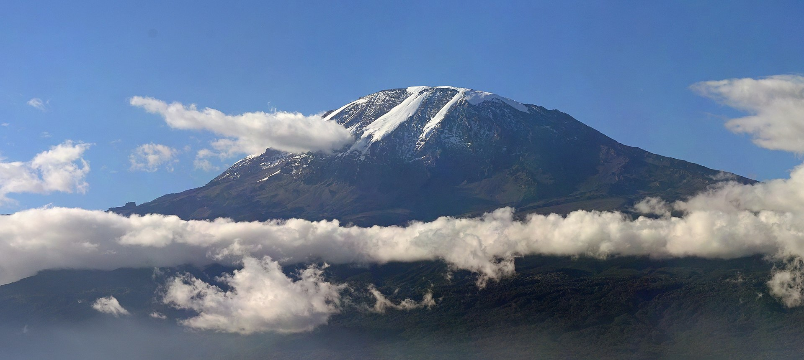

Arusha, Tarangire and Ngorongoro · 6-day family safari
A two-base northern Tanzania loop for families who want wildlife, protected transfer days and enough recovery time to keep the route usable.

Checked before you commit
This is a planning framework, not a live safari booking. It keeps the route to two practical bases and treats the longer park transfers as real travel days.
Planning boundary: A booking-hub link indicates intent only. It does not prove that a safari, room, transfer or flight was booked.
Keep the northern loop legible
Use Arusha for arrival and departure, a Tarangire-area base for the first park anchor, and Karatu or the Ngorongoro area for the second. The route avoids changing accommodation every night and protects the final return to Arusha instead of treating it as a guaranteed quick hop.
Weather, road conditions, family energy, park access and lodge check-in times can change the sequence. If the crater day becomes too demanding, keep the base and use a shorter local activity or a recovery morning rather than adding another long transfer.
Day 1 — Arrive in Arusha and protect the landing
Arrive at Kilimanjaro International Airport, transfer to an Arusha base, and keep the afternoon to a meal, pool or short neighbourhood walk. The decision is to avoid a same-day park transfer after an international arrival.
Fallback: If arrival is late or bags are delayed, make this a hotel recovery evening; do not compress Day 2 to compensate.
Day 2 — Move to Tarangire with one afternoon anchor
After breakfast, take the road from Arusha toward Tarangire and use the afternoon for a first game-drive window near the park’s elephant country before settling at a Tarangire-area base. Keep lunch and vehicle comfort practical rather than adding a second attraction.
Live check: Confirm the route, park-entry rules, vehicle timing and lodge check-in before fixing the sequence.
Day 3 — Give Tarangire the full day
Start early for a guided Tarangire circuit, pause for a packed or lodge-based midday meal, and choose one afternoon loop rather than chasing every sector. The named anchor is Tarangire National Park; the family rationale is one substantial wildlife day without a base move.
Fallback: If heat or fatigue builds, return to base after the morning circuit and keep the afternoon unscheduled.
Day 4 — Use the transfer to reach Karatu / Ngorongoro
Leave Tarangire after breakfast for the Karatu or Ngorongoro area, with a meal stop and arrival buffer instead of layering in another park commitment. Settle into the new base and use the late afternoon for a quiet walk or lodge rest.
Fallback: If the road or family pace runs late, keep the evening local; do not borrow time from the crater-day start.
Day 5 — Make Ngorongoro the second anchor
Use an early start for the Ngorongoro Crater area, then return to the same Karatu / Ngorongoro base rather than attempting a long onward move. Keep the day’s promise to one major landscape and wildlife anchor with a protected return.
Live check: Confirm access windows, vehicle requirements, weather, road conditions and the family’s practical comfort before booking.
Day 6 — Return to Arusha with departure buffer
Return toward Arusha with the airport departure time and road conditions setting the departure from base. If the flight is later, use an Arusha meal or short stop only after checking the buffer.
Fallback: If the departure is early, go directly to the airport; a final attraction is optional, never a promise.
Planning notes
Dates are illustrative. Recheck flights, park fees and access, road conditions, weather, vehicle and guide arrangements, accommodation, health requirements, baggage limits, prices, cancellation terms and supplier availability at decision time. Keep the route editable for family energy and live conditions. Opening a booking hub does not prove a booking occurred.
Share the plan with companions after the route, transfer buffers and confirmation boundaries have been reviewed.
Build the full plan in Alfred
Generate, validate and edit the complete itinerary in the Alfred app.